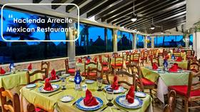
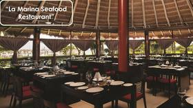
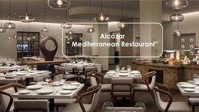
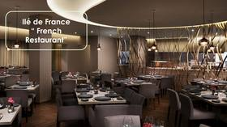
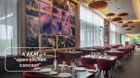

What to wear
Ceremony look
Girls: black knee-length or longer dresses.
Men: black polo or black button-up (full button-up) — those are the only two shirt options.
Pants / bottoms: light linen / sand (very light beige) · #EFE6D4
A small weekend by the sea
vow renewal · December 18, 2026
Weekend basics
A quiet, pretty day with about 27 of us. Soft pinks and champagne — not a loud party look.
What to wear
Girls: black knee-length or longer dresses.
Men: black polo or black button-up (full button-up) — those are the only two shirt options.
Pants / bottoms: light linen / sand (very light beige) · #EFE6D4
Date
Resort
Puerto Morelos · Cancún area
Ceremony
The palapa at the end of the private jetty
Reception
Exact stretch is chosen once we are on property
Where we are
Pin this place for taxis, rides, and maps — Hotel Marina El Cid Spa & Beach Resort in Puerto Morelos.
Map pin
Blvd. El Cid Unidad 15
Puerto Morelos, QR 77580
Mexico
20.8344639, −86.8895111
Hotel Marina El Cid Spa & Beach Resort · Puerto Morelos
On the grounds
Full El Cid Puerto Morelos campus — Marina El Cid, Ventus, and Ventus Ha’. Pick a restaurant or bar — we’ll drop that pin on the layout. Tap Walk in Maps for Google walking directions (Live View on phones). Turn on location so Walk starts from where you are.
Eat
Drink

Campus layout photo from a guest-shared resort map (covers Marina + Ventus + Ventus Ha’). Pins are approximate — letters match the printed legend when shown. Walk opens Google Maps by place name (we do not invent restaurant GPS). Older Marina-only sketch kept as reference.
On-property dining (Marina El Cid)
Tap a restaurant for hours, reservation, and dress code (EN + ES) from Guadalupe’s restaurant PDF. Hours can change — confirm with the lobby or butler.
Breakfast · Sat Mexican Fiesta · 7:00–11:30
Hours
Breakfast only 7:00am – 11:30am · without reservation
Dinner Saturday only — Mexican Fiesta 6:30 – 10:30pm
Desayuno / Breakfast Only · Sin Reservación · Cenas sábado 6:30–10:30 · Fiesta Mexicana
Mexican · Lunch 12:00–5:00

Hours
Lunch only 12:00pm – 5:00pm
Dress code / Código de vestimenta
EN — Men: shirt, long pants or shorts, closed shoes. Women: cocktail-casual dresses, dress sandals. Not allowed: sleeveless shirts, beach sandals, swimsuits, sport clothing.
ES — Hombres: playera, pantalón largo o shorts y zapatos cerrados. Mujeres: vestimenta casual, sandalias de vestir. No se permiten playeras sin mangas, sandalias para agua, ropa deportiva ni trajes de baño.
Seafood · Dinner 5:00–9:00 · reservation

Hours & reservation
Dinner 5:00 – 9:00pm
Cena · Se requiere reservación
Dress code / Código de vestimenta
EN — Men: shirt, long pants or shorts, closed shoes. Women: cocktail-casual dresses, dress sandals. Not allowed: sleeveless shirts, beach sandals, swimsuits, sport clothing.
ES — Hombres: playera, pantalón largo o shorts y zapatos cerrados. Mujeres: vestimenta casual, sandalias de vestir. No se permiten playeras sin mangas, sandalias para agua, ropa deportiva ni trajes de baño.
Italian · Breakfast & dinner · res. for dinner
Hours & reservation
Breakfast 7:30am – 11:30am
Dinner 5:00 – 9:30pm · reservation required
Desayuno 7:30–11:30 · Cena 5–9:30 · Se requiere reservación para cena
Dress code / Código de vestimenta
EN — Men: shirt, long pants or shorts, closed shoes. Women: cocktail-casual dresses, dress sandals. Not allowed: sleeveless shirts, beach sandals, swimsuits, sport clothing.
ES — Hombres: playera, pantalón largo o shorts y zapatos cerrados. Mujeres: vestimenta casual, sandalias de vestir. No se permiten playeras sin mangas, sandalias para agua, ropa deportiva ni trajes de baño.
Mediterranean · Dinner 5:00–9:30 · reservation

Hours & reservation
Dinner 5:00 – 9:30pm
Cena · Se requiere reservación
Dress code / Código de vestimenta
EN — Men: shirt, long pants or shorts, closed shoes. Women: cocktail-casual dresses, dress sandals. Not allowed: sleeveless shirts, beach sandals, swimsuits, sport clothing.
ES — Hombres: playera, pantalón largo o shorts y zapatos cerrados. Mujeres: vestimenta casual, sandalias de vestir. No se permiten playeras sin mangas, sandalias para agua, ropa deportiva ni trajes de baño.
French · Formal · Dinner 5:00–9:30

Hours & reservation
Dinner 5:00 – 9:30pm
Cena formal · Se requiere reservación
Dress code / Código de vestimenta — Formal
EN — Men: long pants, formal collared / polo-style button shirt, closed shoes. Women: formal dress (or dress shorts), dress sandals. Not allowed: sleeveless shirts, beach sandals, swimsuits, sport clothing.
ES — Hombres: camisa con cuello y botones tipo polo y zapatos cerrados. Mujeres: vestido formal o shorts de vestir, sandalias de vestir. No se permiten playeras sin mangas, sandalias para agua, ropa deportiva ni trajes de baño.
Coffee + 6 spots · 12:00–10:30 · no reservation
Hours & reservation
12:00pm – 10:30pm · reservation not required
Inside the mercado
Dress code / Código de vestimenta
EN — Men: shirt, long pants or shorts, closed shoes. Women: cocktail-casual dresses, dress sandals. Not allowed: sleeveless shirts, beach sandals, swimsuits, sport clothing.
ES — Hombres: playera, pantalón largo o shorts y zapatos cerrados. Mujeres: vestimenta casual, sandalias de vestir. No se permiten playeras sin mangas, sandalias para agua, ropa deportiva ni trajes de baño.
Teppanyaki · Dinner 17:00–21:30 · reservation
Hours & reservation
Dinner 17:00 – 21:30
Cena · Se requiere reservación · Cocina japonesa / teppanyaki
Dress code / Código de vestimenta
EN — Men: shirt, long pants or shorts, closed shoes. Women: cocktail-casual dresses, dress sandals. Not allowed: sleeveless shirts, beach sandals, swimsuits, sport clothing.
ES — Hombres: playera, pantalón largo o shorts y zapatos cerrados. Mujeres: vestimenta casual, sandalias de vestir. No se permiten playeras sin mangas, sandalias para agua, ropa deportiva ni trajes de baño.
Ibero-American · Breakfast & dinner

Hours & reservation
Breakfast 7:30am – 11:00am · without reservation
Dinner 17:00 – 21:30 · reservation required
Desayuno sin reservación · Cena con reservación · Cocina iberoamericana · open kitchen
Dress code / Código de vestimenta
EN — Men: shirt, long pants or shorts, closed shoes. Women: cocktail-casual dresses, dress sandals. Not allowed: sleeveless shirts, beach sandals, swimsuits, sport clothing.
ES — Hombres: playera, pantalón largo o shorts y zapatos cerrados. Mujeres: vestimenta casual, sandalias de vestir. No se permiten playeras sin mangas, sandalias para agua, ropa deportiva ni trajes de baño.
Ceremony dinner choices · not daily restaurant menus
This is the ceremony dinner selection guide from Guadalupe’s Wedding Menu (Eng.) PDF — not the à-la-carte restaurant menus. Final choices go on the Wedding Form.
Menú de cena de boda (guía de selección) · Selecciones finales en el Wedding Form.
A few bars